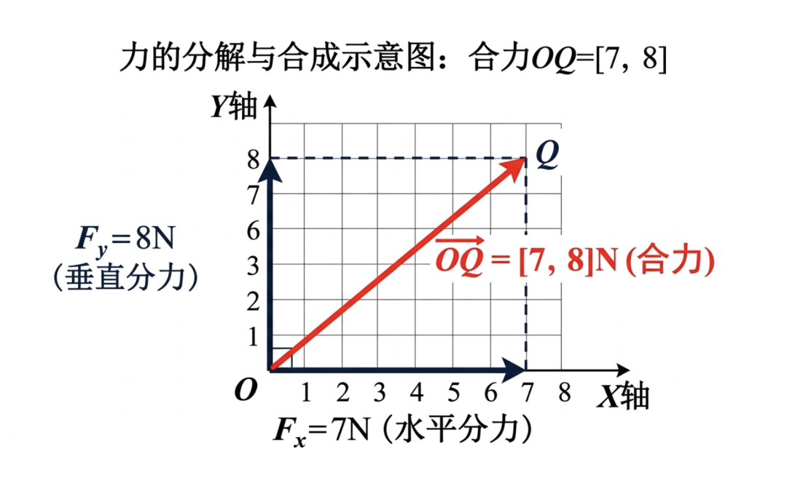
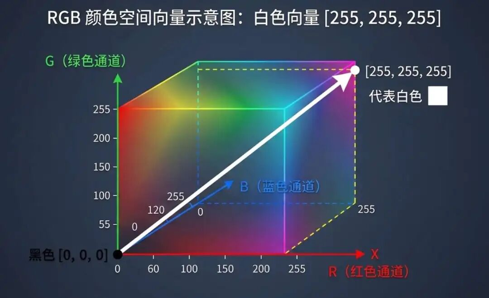
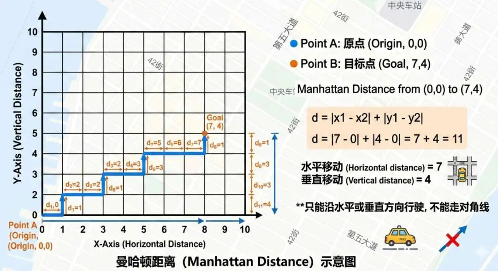
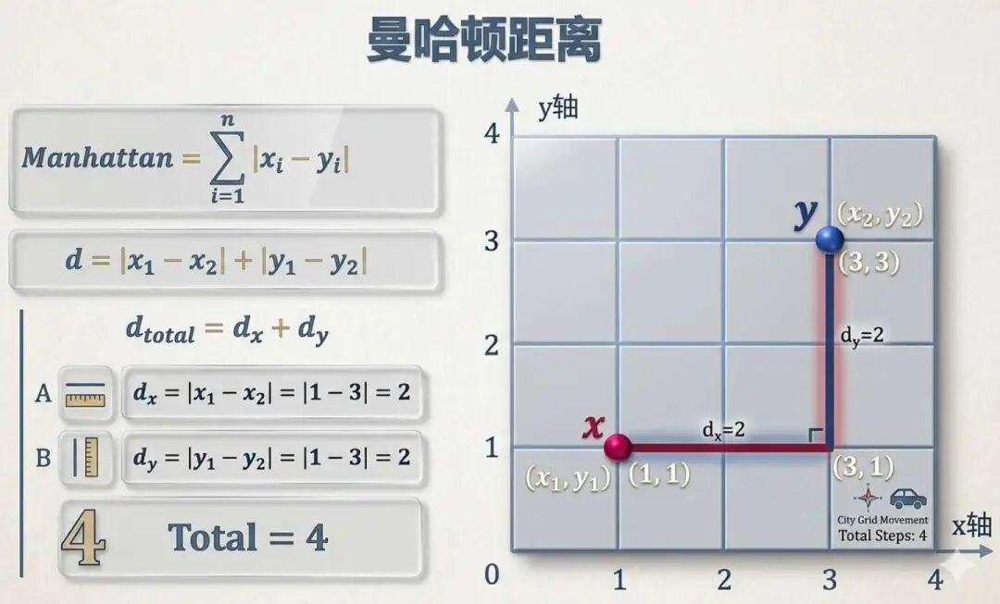
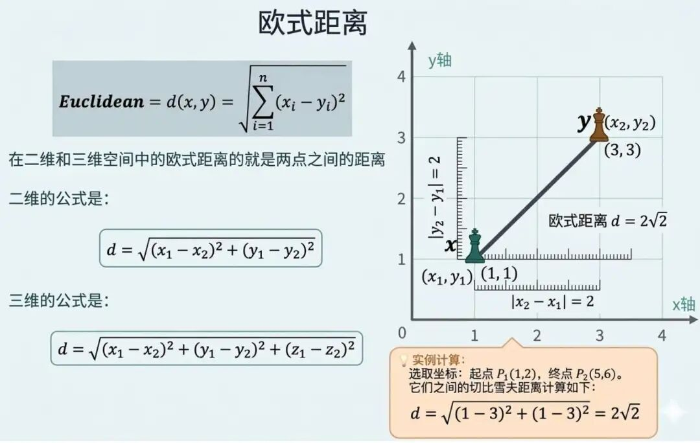
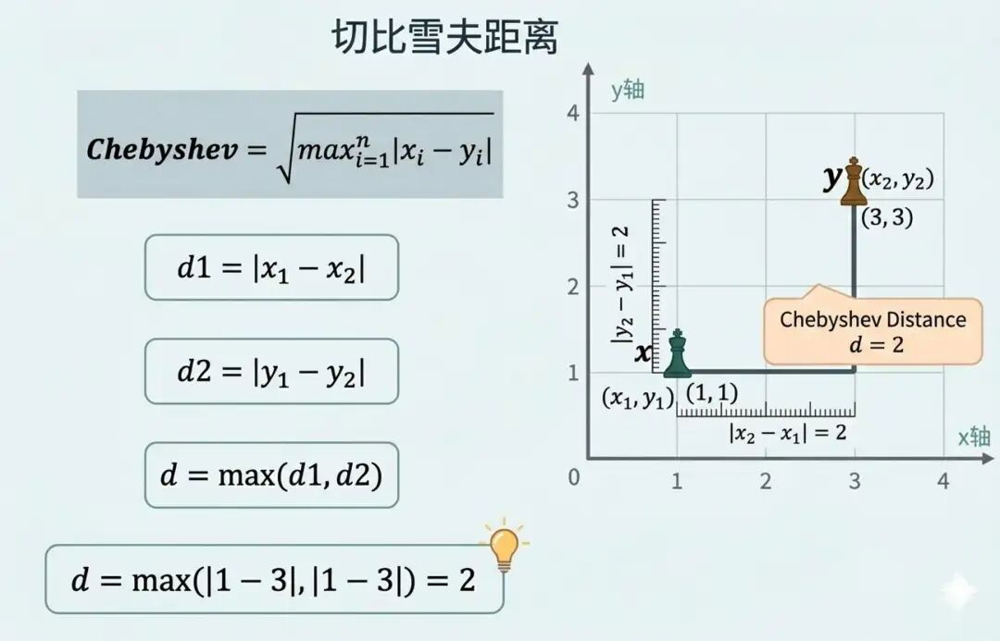
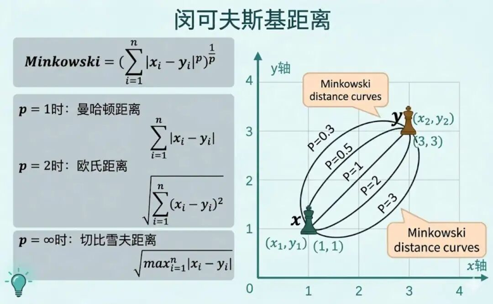
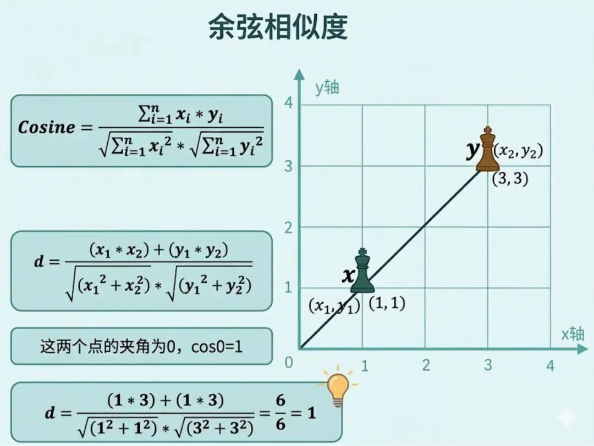

"人工智能是让机器做那些需要人类智慧才能完成之事的艺术。"--马文·明斯基
自 20 世纪 40 年代中后期，存储程序计算机的设计思想被系统提出以来，现代电子计算机的总体设计思路长期深受这一体系所影响。
冯诺依曼体系结构建立在两大基本思想之上，首先计算机内部一律使用"二进制"，即0和1来表示指令和数据；其次是"存储程序"，即程序编译为二进制指令后，和数据一样存放在内存中。
既然计算机只懂得数字，它的运算和存储是构建在以0和1为核心的二进制基础之上的，而十进制、十六进制更多是人们为了表达和理解方便而采用的表示方式。某种意义上说，计算机世界是一场"数字游戏"。
现代 AI 智能的普及，除了算力与数据作为底层驱动力之外，以数学和算法为核心构建的建模方法，同样是其能够大放异彩的重要原因。
对 AI 来说，理解世界的第一步，通常是把事物表示成可计算的数值形式。这里更准确地说，应该叫"数值表示"或"特征表示"，而不单纯等同于日常语境中的"数字化"，也不完全等同于工程上常说的"量化压缩"。
比如，在人脸识别中，需要把人脸的关键特征转换成一组可计算的数字；在自动驾驶中，道路、车辆、行人、车道线等信息，也需要转化为模型可以处理的数值特征；在自然语言处理里，一段文本、甚至一本书，也需要先表示成数字，模型才能进一步学习和计算。
以预测人体寿命这件事为例，我们可以先从人体健康相关特征入手，把一个人表示为一组数值特征。如下表所示，每一列都可以看作描述人体状态的一个特征维度，这就是一种典型的数值化表示方式：
| 体重指数（BMI） | 体脂率（%） | 血压（收缩压 / 舒张压） | 静息心率（次 / 分钟） | 体温（腋下℃） |
|---|---|---|---|---|
| 22.4 | 18 | 118/76 | 68 | 36.6 |
当然，在真实建模过程中，往往还会加入更多特征，并根据任务需要对特征进行归一化、标准化或离散化处理。
当然还有自然语言处理领域，比如将一段文本、甚至一本书用数字表示出来，在早期是一大难题，特别的，还诞生了特征工程这样一门细分类的学科。
会用ElasticSearch这种搜索引擎的同学，可以回想一下tokenizer这个技术。
光是量化还不够，因为量化只能表示"事物"的大小，表示不了"事物"的方向，有人惊讶了，"事物"难道还有方向？当然，比如"力"、"位移"，在物理学中我们称之为矢量，而在数学领域，我们称之为"向量"，大白话就是"具有方向的数量"。
具备高中数学知识的同学，肯定对向量并不陌生，但是你可能还不知道向量在AI领域中也有如此重要的作用吧？
实际上毫不夸张的说，整个机器学习和深度学习都是建立在向量空间（坐标系）的基础之上，没有向量，就没有现如今的AI大模型，包括GPU显卡中的各种运算，本质是也是向量的运算。
我们现在重新来认识一下向量的相关知识和概念，首先在量的分类中，又分为"标量"、"向量"、"矩阵"和"张量"。
这里重新声明一次，我们不是来普及数学知识的，我们主要关注的还是向量，在深度学习实践中，人们既会区分标量、向量、矩阵，也会更统一地使用"张量"这个概念来描述各种维度的数据，不过大多数情况下，我们谈论的更多的还是向量。
向量的方向要怎么表示呢？很容易想到的一个工具是初中时候就学习过的平面直角坐标系，以及高中时候学习过的三维空间直角坐标系。
还记得我们初中的时候，物理课堂学过的力的分解吗？我们将力在二维直角坐标系中进行分解，它代表了两个维度的信息，X轴方向代表了该力在水平方向的大小，为7N。Y轴方向代表了该力在垂直方向的大小，为8N。它们的合力就是红色向量OQ=[7, 8]；

继续看一个三维直角坐标系中的向量，我们知道颜色具有最基本的三个维度的特征RGB，我们可以定义X轴代表"R"红色通道、Y轴代表"G"绿色通道、Z轴代表"B"蓝色通道，每个维度代表一个特征，而图中这个向量[255, 255, 255]，可以看到RGB值均为255，其代表了白色。

不仅仅是力和颜色模式，生活中的万事万物，你都可以用向量来表示，事物的特征数量是多少，呈现在几何图中的坐标轴数量就是多少。
至此到这一步，我们就完成了对任意事物特征的向量化，"万物皆可向量"的名言就来自于上述这样的原理。
不过，仅仅完成向量化还不够。向量化只是把事物表示成了可计算的形式，并不自动告诉我们它们属于哪个类别。
例如，向量 [255, 255, 255] 和 [254, 254, 254] 看起来非常接近，我们大致会判断它们对应的颜色也很接近；但 [255, 255, 255] 和 [255, 200, 200] 是否仍应归为同一类、相似程度到底有多高，就需要借助更明确的距离或相似度计算方法来判断。
如果站在坐标系的特征空间角度，可不可以说两个向量距离很相近，它们是一个类别的概率就大？或者说它们其实就是一个类别。
正所谓："物以类聚，人以群分。"、"近朱者赤，近墨者黑。", 因此我们可以通过计算事物与事物在特征向量空间中的距离来进行分类。
在几何学中，向量之间的距离有多种计算方法：曼哈顿距离、欧氏距离、切比雪夫距离，它们同时也对应着不同的向量计算范式：L1范数、L2范数、L∞ 范数。
曼哈顿距离表示在网格路径中，从一个点到另一个点沿坐标轴方向移动所走过的总距离。
它得名于纽约曼哈顿近似网格状的街道布局：如果只能沿水平和垂直方向行走，而不能走对角线，那么两点之间的距离就是沿坐标轴"绕行"的总路程。

对于向量来说，L1 范数表示向量各个分量绝对值之和；而对于两个点来说，它们的曼哈顿距离等于两点差向量的 L1 范数。

适用场景： L1 范数常用于衡量总体偏差大小。在机器学习中，当 L1 范数被作为正则化项加入优化目标时，往往会诱导模型产生稀疏解，也就是让部分参数变为 0。
因此，当首要目标是做特征选择、提升可解释性或简化模型时，L1 正则通常是一个很重要的选择。
欧氏距离衡量的是两个点之间的直线距离。在向量空间中，每个点都可以看作是从原点出发对应的一个 向量 。
对于一个向量来说，从原点到该点的直线距离，称为这个向量的 L2 范数，也叫欧几里得范数；对于两个点来说，它们之间的欧氏距离则等于差向量的 L2 范数。
适用场景：适用于关心向量之间的直线距离，它在后续我们将要讲到的"聚类分析"、"K-邻近"算法中有重要的运用。

切比雪夫距离的命名源于俄罗斯数学家帕夫努季·切比雪夫，它的定义是找到两个向量所有对应坐标轴刻度的数值差的最大绝对值，举个例子： 假设在三维直角坐标系中有两个点：A(12, 54, 31) 和 B(40, 23, 88)。
它们的切比雪夫距离计算如下：
切比雪夫距离 = max(28, 31, 57) = 57
对于一个向量来说，L∞ 范数表示其各个分量绝对值中的最大值；对于两个点来说，切比雪夫距离等于差向量的 L∞ 范数。

适用场景：适用于关注差异值，即最大差异的场景，由于它和曼哈顿距离一样，只是计算或比较绝对值，因此计算效率很高。
闵可夫斯基距离其实是针对上面三种距离的一个大总结，或者说推广，将三者的距离计算公式统一为：
闵可夫斯基距离是对三者的统一推广：当 p=1 时为曼哈顿距离，p=2 时为欧氏距离，p->∞ 时为切比雪夫距离。

上面介绍的多种距离公式，主要关注的是两个向量之间在"数值位置"上的差异；而余弦相似度关注的是两个向量在"方向"上的相似程度。
通过计算两个向量夹角的余弦值，我们可以判断它们的方向是否一致。余弦相似度的取值范围通常在 [-1, 1] 之间，值越接近 1，表示夹角越小、方向越一致，也就越相似；值越接近 0，表示二者方向相关性较弱；值为 -1 时，则表示方向完全相反。

以上结论虽然时针对于机器学习的，但是深度学习是机器学习的分支，因此以上结论同样适用于深度学习。
讲完了一些常用的距离和相似度的计算公式，我们再来聊聊线性代数和机器学习这门学科的关系。
线性代数的核心就是通过向量对事物进行建模，这和计算机想通过数字来理解世界具有异曲同工之妙，可以说整个AI的大厦就是建立在线性代数的基础之上，它是向AI描述世界、构建模型以及进行运算的根本性工具。
接下来我们将介绍线性代数中一些常用且重要的运算法则，对于大多数想入门AI算法的同学来说，以下知识也就足够了。
首先是矩阵乘法，它是线性代数中最基本也是最重要的运算法则，它的运算前提是第一个矩阵的列数，必须等于第二个矩阵的行数，为何？
因为矩阵乘法的运算规则就是矩阵A的第一行每个数字×矩阵B的第一列对应的每个数字，如上图矩阵A的红色行×矩阵B的蓝色列、矩阵A的黄色行×矩阵B的绿色列，若有更多行列，则以此类推...因此两个矩阵相乘，第一个矩阵的列数必须等于第二个矩阵的行数。
也就是说，如果矩阵 A 的形状是 $m×n$，矩阵 B 的形状是 $n×p$，那么矩阵乘积 $AB$ 才有定义，结果矩阵的形状为 $m×p$ 。
点积可以看作矩阵乘法的一种特例：当一个 n 维向量表示为 $1 \times n$ 的行向量，另一个 n 维向量表示为 $n \times 1$ 的列向量时，它们相乘的结果就是一个标量，即数值，这个标量就是两者的点积。
对于两个n维向量 $\vec{u} = [u_1, u_2, ..., u_n]$ 和 $\vec{v} = [v_1, v_2, ..., v_n]$ ，它们的点积定义为：
例如，假设有两个三维向量：
把 $\vec{u}$ 看作一个行向量，把 $\vec{v}$ 看作一个列向量，那么它们的矩阵乘法为：
因此，这两个向量的点积就是 56。
余弦相似度的计算基础也是点积，如果两个向量的方向越接近，它的点积就越大；如果方向垂直，点积为零。
Transformer 模型中的自注意力机制，正是通过计算 Query 与 Key 之间的点积，来衡量不同位置之间的相关程度，再进一步得到注意力权重。
矩阵的转置就是行转列，列转行，对于一个m×n的矩阵X，转置后就得到一个n×m的矩阵 $X^T$ ，例如：
矩阵的逆是矩阵的"倒数"，有点像我们小学就学过的分数的倒数，对于一个n×n的矩阵X，也称作方阵X，它的逆记作： $X^{-1}$ ，他们满足以下公式：
注：其中 I 是 n 阶单位矩阵，相当于数字中的 1 。
以上就是在学习AI过程中，我们必须掌握的线性代数知识。
向量
由一组有序数值构成的序列，在几何中表示既有大小又有方向的量，在AI中常用来表示数据的特征、样本或模型参数。
向量空间
由一组向量构成的集合，满足向量加法与数乘的封闭性等线性运算规则，是机器学习中表示、运算和处理特征数据的基础数学空间。
L1 范式
也叫曼哈顿范数，是向量中所有元素的绝对值之和，常用于衡量向量的总偏差，具有稀疏性约束和较强的抗异常值能力。
L2 范式
也叫欧几里得范数，是向量中所有元素的平方和开平方根，代表向量的几何长度，是机器学习中最常用的距离与正则化度量。
L∞ 范数
也叫无穷范数，取向量中所有元素绝对值的最大值，用于描述向量分量的最大波动幅度。
余弦相似度
通过计算两个向量之间夹角的余弦值，衡量它们在方向上的相似程度，不受向量长度影响，广泛用于文本、特征匹配与推荐系统。